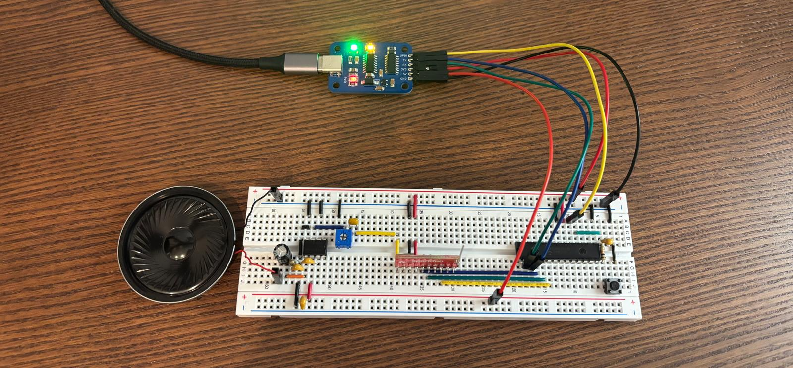

Si4703
El Si4703 es un IC receptor de radio FM (76–108 MHz) con RDS. Pero su tamaño diminuto (QFN 20 3x3) me he dicho: búscate un módulo. Los de sparkfun tienen el suyo que va genial, incluso tiene su diagrama esquemático cómo es costumbre. Me puse armar el circuito con un AVR128DA28 y un LM386. Para programarlo y poder visualizar por la terminal (CDC) use mi grogramador CH340 Serial + UPDI

Para hacerlo funcionar con un microcontrolador AVR128DA28 no hay librerías, entonces decidí usar la IA (claude) basándonos en este repositorio para hacer una “traducción” y luego de varios intentos y correcciones se logró que funcionara. Aquí tienes un zip con lo necesario.
El fabricante ofrece además del datasheet, estos documentos para entender el funcionamiento y el buen uso: